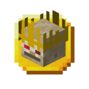

Трофей Ліча
Трофей Ліча — це декоративний блок, який випадає після перемоги над босом. Має розмір майже такий же, як і його голова, але його, на відміну від голови живого Ліча, можна розмістити на підходящому блоці. Також трофей зберегіє відлуння голосу Ліча, яке можна почути натиснувши на корону правою кнопкою миші. Можна поставити на Трофейний п'єдестал при вході у Фортецю Лицаря.
- Тип: трофей
- Міцність: -
- Відновлюваний: ні
- Складається: так (64)
- ID: twilightforest:lich_trophy
